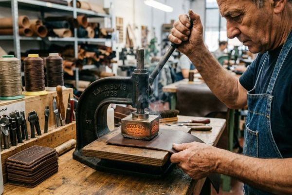
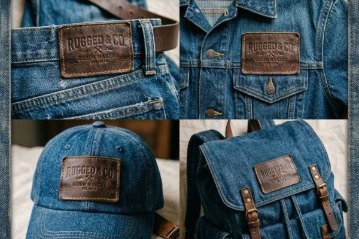

Leather Patches: Elevating Fashion Brand Identity 2026
Discover how leather patches add premium value to fashion brands. Learn about genuine vs faux leather, debossing vs printing techniques, color options, design tips, and real-world applications for jeans, jackets, and luxury apparel.
What Are Leather Patches?
Leather patches are premium decorative elements made from natural or synthetic leather materials, used to add brand identity, decorative flair, and perceived value to fashion apparel and accessories. Unlike embroidered or woven patches, leather patches offer a tactile, luxurious feel that immediately elevates any garment they adorn.
With roots dating back to the mid-20th century in denim and workwear fashion, leather patches have evolved into a staple of premium branding across the fashion industry. From heritage denim brands to high-end luxury houses, leather patches communicate quality, craftsmanship, and attention to detail. At ChinaPatchFactory, we offer both genuine leather and high-quality faux leather options to suit every brand's needs and budget.
Genuine Leather vs Faux Leather: Making the Right Choice
One of the most important decisions when ordering leather patches is choosing between genuine leather and high-quality faux leather. Both options have distinct advantages, and the choice depends on your brand values, budget, and target market.
Genuine Leather Patches
Genuine leather patches are crafted from real animal hide, typically cowhide, though other leathers like sheepskin or goatskin are sometimes used for specialty applications. Each piece of genuine leather has unique natural characteristics including grain variations, subtle markings, and a distinctive aroma that many consumers associate with quality.
Types of Genuine Leather Used for Patches
- Full Grain Leather: The highest quality, showing the complete natural grain with all its unique characteristics
- Top Grain Leather: Sanded and finished to create a more uniform appearance while retaining durability
- Split Leather: Made from the lower layers of the hide, more affordable but still genuine
- Suede Leather: Napped finish created from the underside of the hide for a soft texture
Faux Leather (Vegan Leather) Patches
Modern faux leather, also known as vegan leather or synthetic leather, has advanced significantly in recent years. High-quality PU (polyurethane) and microfiber leathers can closely mimic the look, feel, and even the aging characteristics of genuine leather while offering several advantages.
Advantages of Faux Leather
- Ethical Choice: No animal products used, appealing to vegan and eco-conscious consumers
- Consistent Quality: No natural variations, ensuring every patch looks identical
- More Affordable: Typically 30-50% less expensive than genuine leather
- Easier to Clean: Resistant to stains and water damage
- More Color Options: Can be produced in virtually any color
- Hypoallergenic: Doesn't trigger leather allergies
| Feature | Genuine Leather | Faux Leather |
|---|---|---|
| Material Source | Animal hide | Synthetic (PU/PVC) |
| Natural Variations | ✅ Yes (unique character) | ❌ No (consistent) |
| Cost | Higher | Lower |
| Vegan-Friendly | ❌ No | ✅ Yes |
| Water Resistance | ⚠️ Needs treatment | ✅ Excellent |
| Ages Gracefully | ✅ Develops patina | ⚠️ Minimal aging |
| Color Options | Limited | Virtually unlimited |
Debossing vs Printing: Techniques for Leather Patches
The decoration technique you choose dramatically impacts the final appearance and feel of your leather patches. The two most popular methods are debossing and printing, each offering distinct aesthetic results.
Debossed Leather Patches
Debossing is the traditional and most popular method for leather patches. This technique uses a custom metal die to press your design into the leather surface, creating a recessed, three-dimensional impression. The pressure and heat used in debossing actually change the leather's structure, creating a permanent impression that won't wear off.
Debossing Variations
- Blind Debossing: Simple impression without any color added, relying on the leather's natural contrast
- Debossing with Fill: The recessed area is filled with paint or ink for enhanced visibility
- Embossing: The opposite of debossing, creating a raised design (less common for patches)
- Combination: Both debossed and printed elements for complex designs
Printed Leather Patches
Printing offers more design flexibility than debossing, allowing for full-color designs, gradients, photographs, and intricate details that aren't possible with debossing alone. Modern printing techniques ensure excellent durability on leather surfaces.
Printing Techniques
- Screen Printing: Ideal for solid colors and bold designs, excellent durability
- Digital Printing: Perfect for full-color designs, gradients, and photographic elements
- Foil Printing: Adds metallic elements (gold, silver, bronze) for luxury appeal
- UV Printing: Instant curing, vibrant colors, excellent adhesion

Leather Colors and Finishes
Leather patches are available in a wide range of colors and finishes to match your brand aesthetic. From classic natural tones to bold contemporary colors, there's a perfect option for every application.
Classic Leather Colors
Dark Brown
Classic, timeless choice
Medium Brown
Warm, versatile option
Tan/Light Brown
Casual, natural look
Black
Sleek, modern aesthetic
Contemporary and Fashion Colors
Beyond the classics, leather patches can be produced in virtually any color:
- Navy Blue: Sophisticated alternative to black
- Burgundy/Wine: Rich, luxurious option
- Forest Green: Earthy, outdoor aesthetic
- Gray/Taupe: Modern, neutral choice
- Custom Colors: PMS color matching available
Leather Finishes
- Natural/Aniline: Shows the full grain, develops beautiful patina
- Semi-Aniline: Light protective coating while retaining natural character
- Full Grain/Pigmented: Durable, uniform, easy to maintain
- Nubuck: Sanded finish, similar to suede but more durable
- Suede: Soft, napped texture from the hide's underside
- Distressed/Vintage: Pre-aged for that broken-in look
Fashion Applications: Where Leather Patches Excel
Leather patches have become ubiquitous across fashion categories, adding perceived value and brand identity to a wide range of garments and accessories.
Denim and Jeans
The classic application for leather patches is undoubtedly denim jeans. Since the mid-20th century, premium denim brands have used leather patches on the waistband to communicate quality and authenticity. The leather patch has become so iconic that many consumers look specifically for this detail when shopping for jeans.
- Typically placed on the back waistband
- Usually 2-3 inches in height
- Often features brand logo, size information, and care instructions
- Develops a unique patina with wear
Jackets and Outerwear
Leather jackets, denim jackets, varsity jackets, and work jackets all benefit from leather patches. Whether on the sleeve, chest, or back, leather patches add a touch of rugged luxury to outerwear.
Fashion Accessories
Beyond clothing, leather patches enhance numerous accessories:
- Hats and Caps: Snapbacks, dad hats, beanies
- Bags and Luggage: Backpacks, tote bags, duffel bags
- Wallets and Small Goods: Branding accents
- Shoes and Boots: Tongue patches, heel accents
- Pet Accessories: Collars, leashes, harnesses
Luxury and High-End Fashion
Many luxury fashion houses use leather patches as subtle branding elements. The premium feel of leather aligns perfectly with luxury brand positioning, communicating craftsmanship and attention to detail.

Design Tips for Effective Leather Patches
Creating an effective leather patch design requires understanding the medium's strengths and limitations. Follow these guidelines to maximize impact while ensuring manufacturability.
Design Considerations for Debossing
- Keep It Simple: Bold, clean lines work best; avoid extremely fine details
- Minimum Line Width: 1pt (0.35mm) for best results
- Text Size: Minimum 6pt, preferably 8pt or larger for readability
- Negative Space: Use effectively to create contrast
- Consider Scale: Design should look good at actual patch size, not just on screen
Color and Contrast
Contrast is crucial for leather patch visibility. Consider these combinations:
- Dark leather + light fill: Classic, highly readable combination
- Light leather + dark fill: Modern, clean aesthetic
- Blind debossing: Subtle, sophisticated look (best for darker leathers)
- Monochromatic: Same color family for tonal effect
Shape and Size Recommendations
- Classic Rectangle: Most common for jeans and traditional applications
- Shield/Crest: Adds heritage and prestige
- Organic Shapes: Follow your logo's natural shape
- Size Range: Typically 1-4 inches in the largest dimension
- Proportion: Consider the garment size when determining patch dimensions
File Preparation
For best results, provide your design in:
- Vector Format: AI, EPS, or SVG for crisp edges
- Outline All Text: Convert fonts to outlines
- Specify PMS Colors: For accurate color matching
- Indicate Deboss vs Print: Clearly mark which elements are which
Branding Considerations: Building Identity with Leather Patches
Leather patches offer unique branding opportunities beyond simple decoration. When strategically designed, they become an integral part of your brand identity and customer experience.
Brand Storytelling Through Patches
Every element of your leather patch can tell part of your brand story:
- Material Choice: Genuine vs faux communicates brand values
- Color Selection: Reinforces brand color palette
- Design Style: Modern vs vintage communicates brand personality
- Placement: Traditional vs unexpected creates brand signature
Consistency Across Product Lines
Using consistent leather patch designs across your product line creates:
- Instant Brand Recognition: Customers identify your products immediately
- Perceived Cohesion: Products feel like part of a unified collection
- Collectible Appeal: Encourages customers to collect multiple items
Limited Edition and Collaborative Patches
Leather patches work exceptionally well for special releases:
- Limited Editions: Unique patch designs create urgency
- Collaborations: Co-branded patches for partnership projects
- Anniversary Collections: Commemorative patches for milestones
- Artist Series: Limited designs from featured artists
Why Choose ChinaPatchFactory for Leather Patches?
With over 15 years of experience manufacturing custom leather patches for fashion brands worldwide, ChinaPatchFactory combines traditional craftsmanship with modern technology to deliver exceptional quality.
Our Leather Patch Advantages
- Premium Materials: Carefully selected genuine leathers and high-quality faux leathers
- Expert Craftsmanship: Skilled artisans with decades of experience
- Custom Metal Dies: Precision tooling for crisp, consistent debossing
- Color Matching: PMS color matching for accurate results
- Multiple Techniques: Debossing, printing, foil, and combinations
- Rigorous Quality Control: Every patch inspected before shipping
- Eco-Friendly Options: Vegan leathers and sustainable practices
Ready to Create Premium Leather Patches?
Get started with a free quote and digital proof. Our design team can help you create the perfect leather patches for your brand.
Get Free QuoteFrequently Asked Questions
How long do leather patches last?
With proper care, genuine leather patches can last the lifetime of the garment and actually improve with age as they develop a beautiful patina. High-quality faux leather patches typically last 5-7 years or more with normal use.
Can leather patches be washed?
Yes! Leather patches can withstand regular washing. We recommend turning the garment inside out, using cold water, and line drying. Avoid dry cleaning as the chemicals can damage leather, and never use bleach or fabric softener on leather patches.
What's the minimum order quantity for leather patches?
At ChinaPatchFactory, we have no minimum order requirement for leather patches. You can order as few as one patch for testing or prototypes, though economies of scale typically make orders of 100+ more cost-effective.
Can I feel the leather before ordering?
Absolutely! We offer leather swatch packs so you can see and feel the material options before committing to a full order. Contact our team to request swatches in your preferred colors and finishes.
How long does it take to produce leather patches?
Standard production time for leather patches is 7-10 business days after proof approval. Rush options are available for urgent orders. Custom dies typically take 2-3 days to produce before manufacturing can begin.
Conclusion
Leather patches represent one of the most effective ways to elevate fashion brand identity. Their unique combination of tactile appeal, perceived value, and timeless aesthetic makes them a favorite among heritage brands and contemporary designers alike.
Whether you choose genuine leather for its natural character and aging potential, or high-quality faux leather for its consistency, ethical benefits, and affordability, leather patches communicate quality and attention to detail that resonates with consumers. The classic combination of denim and leather patches has stood the test of time, while contemporary applications on jackets, accessories, and luxury goods continue to expand the possibilities.
At ChinaPatchFactory, we've spent over 15 years perfecting the art of leather patch manufacturing. Our commitment to premium materials, expert craftsmanship, and rigorous quality control ensures that every patch we produce meets the highest standards. Whether you're a heritage denim brand looking to maintain tradition, a contemporary fashion house pushing design boundaries, or a new brand building your identity from scratch, we have the expertise and capabilities to bring your vision to life.
The right leather patch can become an iconic element of your brand identity, something customers recognize and seek out. Contact us today for your free quote and digital proof, and discover how leather patches can elevate your fashion brand identity in 2026 and beyond.